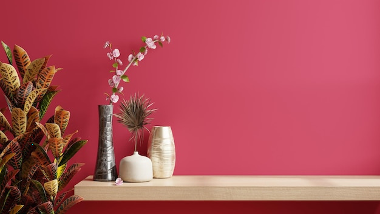

A calm living room begins with a simple plan: make the most of natural light, keep the palette cohesive and give the space room to breathe. Rather than filling every corner, choose a few well-considered pieces that support how you use the room.

Notice how daylight moves through the room during the day. Keep the area around windows as clear as possible, and avoid placing tall furniture where it blocks light from travelling further into the space. If privacy is needed, choose curtains in a light fabric or blinds that can be adjusted to suit the time of day.
Mirrors can help reflect daylight, especially when placed where they catch light from a window. Use them thoughtfully: one well-positioned mirror is often more effective than several competing reflective surfaces.
Pale colours can help a room feel open, but an all-white scheme is not essential. Warm neutrals, muted greens, soft blues and gentle earth tones can create a similarly restful effect. Consider the light in your room when choosing paint and fabrics, as colours can look different in natural and artificial light.
Build the palette from a few related shades. Walls, upholstery and larger furnishings can sit within the same tonal family, while cushions, artwork or a rug introduce subtle contrast. Repeating a colour in more than one place helps the room feel considered rather than busy.
Arrange furniture around the room’s main purpose, whether that is conversation, reading or relaxing. Make sure there is enough space to move comfortably between the sofa, chairs and doorways. A layout that feels easy to navigate often feels calmer than one with more furniture.
Choose pieces with suitable proportions. Oversized furniture can make a compact room feel crowded, while very small pieces may look disconnected in a larger space. If the room serves several purposes, define areas with a rug, lighting or the positioning of furniture instead of adding unnecessary dividers.
A calm scheme does not need to feel plain. Natural materials and varied textures—such as wood, wool, linen and ceramics—add depth while keeping the overall look understated. A textured throw, a woven rug or a simple ceramic lamp can bring warmth without relying on strong patterns.
Be selective with decorative objects. Group a few pieces together, leaving clear surfaces around them. Editing displays from time to time can make the room feel more settled and helps favourite items stand out.
Natural light changes throughout the day, so plan for the room to feel comfortable after dusk as well. Combine general lighting with lamps for reading or quieter moments. Where possible, choose bulbs with a warm appearance and use dimmers or separate switches to adjust the atmosphere.
Position task lighting where it is useful, such as beside a reading chair. Avoid relying on a single bright ceiling light to serve every purpose; several gentle sources usually make a living room feel more inviting.
Plants can add life and a natural point of interest. Choose varieties that suit the light available in the room, and place them where they will not obstruct windows or walkways. A small number of well-placed plants can feel more restful than filling every surface with pots.
The most successful light-filled living rooms balance brightness with comfort. By keeping the layout open, choosing a harmonious palette and adding texture and layered lighting, you can create a space that feels both calm and welcoming.
Please review the full privacy policy to understand how information submitted through this website may be handled. The details of data collection, use, storage and your choices should be set out in the complete policy. Read the Privacy Policy